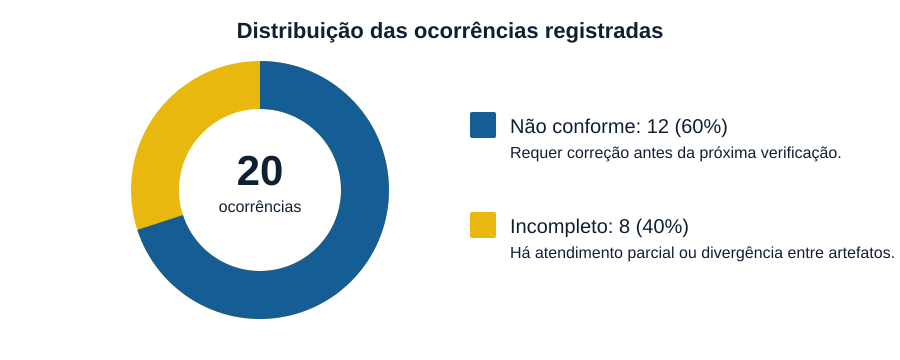
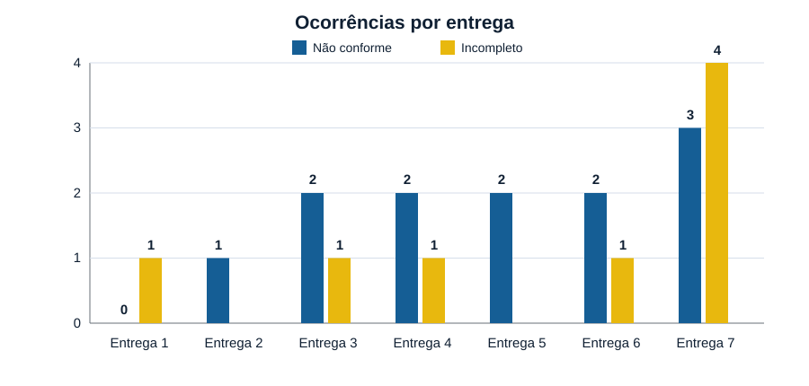

Histórico de Versão e Contribuição¶
| Data | Versão | Descrição | Autor(es) | Revisor(es) | Declaração de Uso de IA |
|---|---|---|---|---|---|
| 22/11/2026 | 1.0 |
Consolidação dos itens não conformes e incompletos encontrados na inspeção geral do projeto, com tabelas, gráficos e encaminhamentos. | Arthur Mariani; Carlos Henrique; Gabriel Melo; Igor Dantas; Lucas Araújo; Rodrigo Carvalho; Tomás Garcia | Arthur Mariani; Carlos Henrique; Gabriel Melo; Igor Dantas; Lucas Araújo; Rodrigo Carvalho; Tomás Garcia | Google Gemini: apoio na estruturação, redação, consolidação quantitativa e geração dos gráficos. |
Relato da Inspeção Geral do Projeto¶
1. Introdução¶
Este documento consolida os resultados da inspeção geral dos artefatos das Entregas 1 a 7 do Grupo 05. A inspeção foi realizada com base nos princípios do método de Fagan, que estrutura a revisão de artefatos por critérios explícitos, papéis definidos, registro de defeitos, retrabalho e acompanhamento das correções (FAGAN, 1976). A avaliação utilizou as listas de verificação versão 2.0, que organizam os critérios de desenvolvimento do projeto (D), os itens definidos no Plano de Ensino (C) e os itens elaborados pelo grupo (G).
Foram incluídos neste relato somente os critérios classificados como Não conforme ou Incompleto. Os demais critérios foram considerados conformes durante a inspeção e, por isso, não aparecem nas tabelas de achados.
2. Método e limitações¶
A inspeção geral foi conduzida por entrega, comparando os artefatos publicados com os critérios aplicáveis de suas listas de verificação. A classificação adotada foi:
| Classificação | Significado nesta inspeção | Encaminhamento |
|---|---|---|
| Não conforme | O critério não foi atendido. | Corrigir o artefato e submetê-lo a nova verificação. |
| Incompleto | O critério foi atendido apenas em parte ou não foi atendido de maneira uniforme pelos artefatos da entrega. | Completar ou padronizar os artefatos antes da nova verificação. |
Fonte: Elaborado por Inteligência Artificial.
Como o grupo possui sete integrantes, algumas fases contêm sete artefatos correlatos. Nesses casos, quando parte dos artefatos atende ao critério e pelo menos um não atende, o resultado consolidado foi registrado como Incompleto. Esta decisão evita transformar a conformidade de seis artefatos em uma afirmação indevida de conformidade da entrega inteira.
2.1 Organização baseada em Fagan¶
Fagan (1976) organiza a inspeção em planejamento, visão geral, preparação, reunião de inspeção, retrabalho e acompanhamento. Nesta inspeção, o método foi adaptado ao contexto dos artefatos de IHC: as listas forneceram os critérios de exame, a reunião registrada consolidou as classificações e este relato registra os achados e orienta o retrabalho.
Tabela 2: Papéis na inspeção geral conforme o método de Fagan
| Papel | Participante(s) | Responsabilidade exercida |
|---|---|---|
| Moderador | Carlos Henrique | Planejar e conduzir a inspeção, manter o foco nos critérios e acompanhar os encaminhamentos. |
| Autor | Arthur Mariani; Carlos Henrique; Gabriel Melo; Igor Dantas; Lucas Araújo; Rodrigo Carvalho; Tomás Garcia | Autores dos artefatos inspecionados. |
| Leitor | Carlos Henrique | Percorrer os critérios das listas e os artefatos de forma estruturada durante a inspeção. |
| Relator | Rodrigo Carvalho | Registrar os achados, suas classificações, evidências e encaminhamentos. |
| Inspetores | Gabriel Melo; Igor Dantas; Lucas Araújo; Tomás Garcia | Examinar os artefatos, identificar desvios dos critérios e participar da consolidação dos resultados. |
Fonte: Elaborado por Inteligência Artificial.
Quadro 1: Comparação entre a inspeção de Fagan e a aplicação no Grupo 05
| Etapa de Fagan | Previsão teórica | Aplicação na inspeção geral |
|---|---|---|
| Planejamento | Definir escopo, participantes, papéis e critérios de entrada. | O escopo abrangeu todos os artefatos produzidos no projeto, das Entregas 1 a 7. As listas v2.0 e os papéis de Fagan delimitaram a inspeção. |
| Visão geral e preparação | Apresentar o artefato e permitir que os inspetores compreendam os critérios antes do exame. | As listas e suas referências foram consultadas antes da checagem dos artefatos. |
| Reunião de inspeção | Identificar e registrar defeitos, sem deslocar o foco para a solução durante o exame. | A gravação registra a conferência dos critérios e as classificações Conforme, Não conforme ou Incompleto. |
| Retrabalho | O autor corrige os defeitos registrados. | As tabelas de achados e de prioridades indicam os encaminhamentos de correção, organizados no cronograma de retrabalho. |
| Acompanhamento | Verificar se as correções foram implementadas corretamente. | A reaplicação dos critérios registrados na seção 6 foi definida como próxima verificação. |
Fonte: Elaborado por Inteligência Artificial.
2.2 Gravação da inspeção geral¶
O registro audiovisual da inspeção geral está disponível em YouTube: Inspeção Geral do Grupo 05.
Vídeo 1: Gravação da inspeção geral dos artefatos do Grupo 05.
Fonte: Elaborado por Inteligência Artificial.
Não foi produzida rastreabilidade por artefato individual neste relato. Para isso, seria necessário rever as gravações e conferir cada artefato um a um, o que não integra o conjunto de evidências desta consolidação. Portanto, os resultados devem ser lidos como uma visão agregada por entrega e critério, e não como atribuição de problema a uma pessoa ou documento específico.
3. Visão geral dos resultados¶
Foram registradas 20 ocorrências: 12 não conformidades (60%) e 8 itens incompletos (40%). A consolidação e a análise da frequência dos tipos de achado seguem a orientação de Fagan (1976) de usar os resultados da inspeção para orientar a melhoria do processo.

Gráfico 1: Distribuição das ocorrências classificadas na inspeção geral.
Fonte: Elaborado por Inteligência Artificial.

Gráfico 2: Quantidade de ocorrências não conformes e incompletas por entrega.
Fonte: Elaborado por Inteligência Artificial.
Tabela 3: Síntese das ocorrências por entrega
| Entrega | Não conforme | Incompleto | Total |
|---|---|---|---|
| 1 | 0 | 1 | 1 |
| 2 | 1 | 0 | 1 |
| 3 | 2 | 1 | 3 |
| 4 | 2 | 1 | 3 |
| 5 | 2 | 0 | 2 |
| 6 | 2 | 1 | 3 |
| 7 | 3 | 4 | 7 |
| Total | 12 | 8 | 20 |
Fonte: Elaborado por Inteligência Artificial.
4. Achados por entrega¶
4.1 Entrega 1¶
Tabela 4: Achados da Entrega 1
| Critério | Classificação | Achado consolidado | Encaminhamento |
|---|---|---|---|
| G3 | Incompleto | A comparação dos sites não considera integralmente a experiência do usuário: estilo da interface, estrutura das tarefas, terminologia e qualidade de uso. | Completar a comparação com evidências para todos os aspectos de experiência do usuário previstos no critério. |
Fonte: Elaborado por Inteligência Artificial.
4.2 Entrega 2¶
Tabela 5: Achados da Entrega 2
| Critério | Classificação | Achado consolidado | Encaminhamento |
|---|---|---|---|
| D4 | Não conforme | Há tabelas e/ou imagens sem legenda, fonte ou chamada correspondente no texto. | Revisar os artefatos e garantir legenda, fonte e referência textual para cada tabela e imagem. |
Fonte: Elaborado por Inteligência Artificial.
4.3 Entrega 3¶
Tabela 6: Achados da Entrega 3
| Critério | Classificação | Achado consolidado | Encaminhamento |
|---|---|---|---|
| D5 | Não conforme | Um ou mais artefatos não apresentam texto introdutório. | Acrescentar uma introdução que contextualize objetivo, escopo e organização do artefato. |
| C17 | Incompleto | O Guia de Estilo não demonstra integralmente correspondência com o site avaliado; o conteúdo e a evidência precisam de ajuste. | Corrigir o conteúdo e inserir evidências que conectem as diretrizes ao site da SEMOB-DF. |
| G1 | Não conforme | O critério de simplificação da estrutura das tarefas não foi atendido. | Revisar o artefato e evidenciar como as tarefas são simplificadas, apoiadas ou tornam informações relevantes visíveis. |
Fonte: Elaborado por Inteligência Artificial.
4.4 Entrega 4¶
Tabela 7: Achados da Entrega 4
| Critério | Classificação | Achado consolidado | Encaminhamento |
|---|---|---|---|
| D4 | Incompleto | Há tabelas e/ou imagens que não atendem integralmente à exigência de legenda, fonte e chamada no texto. | Padronizar a identificação e a chamada de todos os elementos visuais. |
| D9 | Não conforme | Não há vídeo de apresentação não listado no YouTube conforme exigido pelo critério. | Publicar ou vincular o vídeo não listado da entrega. |
| G7 | Não conforme | O planejamento não define integralmente o cronograma das atividades de avaliação. | Registrar recrutamento, teste-piloto, coleta, análise de dados e entrega do relato, com datas ou períodos. |
Observação: o item G6 foi considerado conforme, embora sua redação necessite correção. Como não constitui não conformidade do artefato, essa revisão textual não integra a contagem de ocorrências.
Fonte: Elaborado por Inteligência Artificial.
4.5 Entrega 5¶
Tabela 8: Achados da Entrega 5
| Critério | Classificação | Achado consolidado | Encaminhamento |
|---|---|---|---|
| D4 | Não conforme | Há tabelas e/ou imagens sem legenda, fonte ou chamada no texto. | Padronizar todos os elementos visuais e suas referências textuais. |
| D6 | Não conforme | O cronograma executado não registra integralmente responsáveis e datas de início e fim das atividades. | Atualizar o cronograma executado com responsáveis e datas de realização. |
Fonte: Elaborado por Inteligência Artificial.
4.6 Entrega 6¶
Tabela 9: Achados da Entrega 6
| Critério | Classificação | Achado consolidado | Encaminhamento |
|---|---|---|---|
| D4 | Não conforme | Há tabelas e/ou imagens sem legenda, fonte ou chamada no texto. | Padronizar todos os elementos visuais e suas referências textuais. |
| D6 | Não conforme | O cronograma executado não registra integralmente responsáveis e datas de início e fim das atividades. | Atualizar o cronograma executado com responsáveis e datas de realização. |
| G7 | Incompleto | O planejamento não comprova integralmente consentimento, anonimato, participação voluntária e autorização para gravações. | Completar a documentação ética e tornar explícitos os quatro elementos exigidos. |
Fonte: Elaborado por Inteligência Artificial.
4.7 Entrega 7¶
Tabela 10: Achados da Entrega 7
| Critério | Classificação | Achado consolidado | Encaminhamento |
|---|---|---|---|
| D4 | Não conforme | Há tabelas e/ou imagens sem legenda, fonte ou chamada no texto. | Padronizar todos os elementos visuais e suas referências textuais. |
| D6 | Não conforme | O cronograma executado não registra integralmente responsáveis e datas de início e fim das atividades. | Atualizar o cronograma executado com responsáveis e datas de realização. |
| G1 | Incompleto | O protótipo não pode ser aberto e utilizado de forma autônoma por todos os participantes. | Garantir um link funcional e navegação independente, sem troca manual de telas pelo avaliador. |
| G3 | Incompleto | O protótipo não segue integralmente o Guia de Estilo do Grupo 05. | Ajustar rótulos, mensagens de erro e alvos de toque conforme o guia. |
| G5 | Incompleto | O relato não informa integralmente objetivo, escopo, método e versão do protótipo avaliado. | Completar a identificação metodológica do relato. |
| G6 | Incompleto | O relato não informa integralmente quantidade, perfil dos participantes e quem atuou como avaliador. | Completar a caracterização dos participantes e os papéis na avaliação. |
| G7 | Não conforme | O relato não registra as mudanças em relação ao planejamento e seus efeitos. | Documentar alterações de datas, participantes, papéis ou medições e seus impactos nos resultados. |
Fonte: Elaborado por Inteligência Artificial.
5. Prioridades de correção¶
As ocorrências mostram três frentes de correção. A primeira é transversal: D4 ocorre em cinco entregas e D6 em três, portanto a padronização editorial e do cronograma executado deve ser realizada de forma coordenada. A segunda é de completude metodológica: os relatos e planejamentos das Entregas 4, 6 e 7 precisam tornar explícitos cronograma, ética, método e resultados. A terceira é de qualidade da solução: a Entrega 3 precisa reforçar a ligação do Guia de Estilo ao domínio avaliado, enquanto a Entrega 7 requer ajustes no protótipo e no relato de alta fidelidade.
Tabela 11: Ordem sugerida para o retrabalho
| Prioridade | Frente | Critérios envolvidos | Motivo |
|---|---|---|---|
| 1 | Padronização transversal | D4 e D6 | Corrige problemas repetidos em várias entregas. |
| 2 | Relatos e planejamento de avaliação | E4 G7; E6 G7; E7 G5–G7 | Completa informação necessária para interpretar e verificar as avaliações. |
| 3 | Guia de Estilo e princípios | E3 C17 e G1 | Melhora a ligação entre análise, diretrizes e o redesign. |
| 4 | Protótipo de alta fidelidade | E7 G1 e G3 | Permite avaliação autônoma e aderente ao Guia de Estilo. |
| 5 | Comparação de sites | E1 G3 | Completa a justificativa de experiência do usuário na escolha do site. |
Fonte: Elaborado por Inteligência Artificial.
5.1 Cronograma de retrabalho¶
O cronograma abaixo operacionaliza o retrabalho previsto na inspeção de Fagan. Os autores dos artefatos executam as correções; o moderador, o relator e os inspetores apoiam a verificação e o registro do resultado.
Tabela 12: Cronograma de retrabalho e acompanhamento
| Data | Atividade | Critérios ou entregas envolvidos | Responsáveis | Resultado esperado |
|---|---|---|---|---|
| 23/11 | Revisar a padronização editorial e o cronograma executado. | D4 e D6 das Entregas 2, 4, 5, 6 e 7. | Autores dos artefatos inspecionados. | Tabelas, imagens, fontes, chamadas e cronogramas atualizados. |
| 24/11 | Corrigir os achados da Entrega 1 e do Guia de Estilo. | E1 G3; E3 C17 e G1. | Autores dos artefatos inspecionados. | Comparação de sites e diretrizes de design completadas com evidências. |
| 25/11 | Completar o planejamento da avaliação e os registros éticos. | E4 D9 e G7; E6 G7. | Autores dos artefatos inspecionados. | Vídeo, cronograma de avaliação e documentação ética regularizados. |
| 26/11 | Ajustar o protótipo e o relato de alta fidelidade. | E7 G1, G3, G5, G6 e G7. | Autores dos artefatos inspecionados. | Protótipo autônomo, aderente ao Guia de Estilo, e relato completo. |
| 27/11 | Revisar os artefatos corrigidos e consolidar as evidências. | Todos os critérios registrados neste relato. | Moderador, relator e inspetores. | Registro atualizado das correções e das evidências consultadas. |
| 28/11 | Realizar o acompanhamento da inspeção de Fagan. | Todos os critérios registrados neste relato. | Moderador, relator, inspetores e autores dos artefatos. | Reaplicação dos critérios e encerramento ou abertura de pendências remanescentes. |
Fonte: Elaborado por Inteligência Artificial.
6. Próxima verificação¶
Após o retrabalho, recomenda-se reaplicar apenas os critérios registrados neste relato, atualizando a situação de cada um para Conforme, Não conforme ou Incompleto. Essa confirmação corresponde ao acompanhamento previsto por Fagan (1976). A nova aplicação deve registrar a versão dos artefatos verificados, a data, os avaliadores e as evidências consultadas, seguindo o modelo de registro presente nas listas de verificação.
Referências Bibliográficas¶
- BARBOSA, Simone Diniz Junqueira; SILVA, Bruno Santana da; SILVEIRA, Milene Selbach; GASPARINI, Isabela; DARIN, Ticianne; BARBOSA, Gabriel Diniz Junqueira. Interação Humano-Computador e Experiência do Usuário. Rio de Janeiro: Autopublicação, 2021. ISBN 978-65-00-19677-1. Versão de 03/05/2021.
- FAGAN, Michael E. Design and code inspections to reduce errors in program development. IBM Systems Journal, v. 15, n. 3, p. 182–211, 1976. DOI: 10.1147/sj.153.0182.
- SALES, André Barros de. Plano de Ensino: Interação Humano Computador: Turma 01. Brasília: Universidade de Brasília, Faculdade UnB Gama, 2026. Disponível em: Plano de Ensino (PDF).